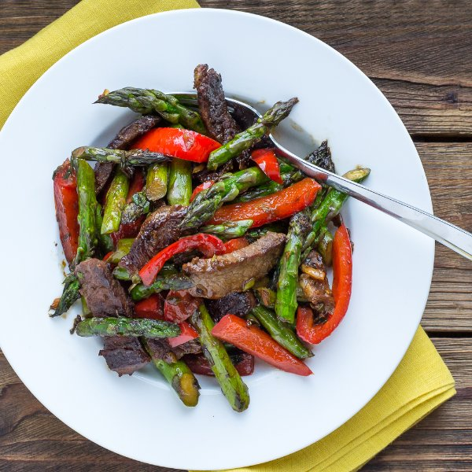

Steak, Asparagus & Bell Pepper Stir Fry

Nutrition (per serving)
560.7 kcalCalories
41.4 gProtein
13.8 gCarbs
39.4 gFat
Full nutrition table
| Calories | 560.7 kcal |
| Total fat | 39.4 g |
| Saturated fat | 22.1 g |
| Trans fat | 1.4 g |
| Cholesterol | 103.8 mg |
| Sodium | 85.6 mg |
| Carbohydrates | 13.8 g |
| Fiber | 4.7 g |
| Sugars | 5.5 g |
| Protein | 41.4 g |
| Potassium | 971.2 mg |
| Calcium | 90.3 mg |
| Iron | 6.8 mg |
| Vitamin A | 1182.4 IU |
| Vitamin C | 88.6 mg |
| Vitamin D | 6.8 IU |
Cookware
Ingredients
- 2 small bunchesasparagus
- 4 clovesgarlic
- 2 (1 inch) piecesginger root
- 1 small bunchgreen onions (scallions)
- 2red bell peppers
- 1 ½ lbstriploin (New York strip) steak
- cornstarch
- crushed red pepper
- soy sauce
- toasted sesame oil
- virgin coconut oil
Steps
- In a small bowl, make a slurry by whisking water with cornstarch until smooth. Add soy sauce, sesame oil, and red pepper; whisk together. Set aside.4 tbsp cold water
2 tsp cornstarch
4 tbsp soy sauce
2 tsp toasted sesame oil
¼ tsp crushed red pepper - Wash the fresh produce. Snap (or cut) off woody ends from the asparagus, then cut on an angle into 2 inch pieces; transfer to a large bowl. Seed and cut the bell peppers into 2 inch strips; add to the bowl with asparagus. Trim green onion ends and chop on an angle; transfer to a small bowl.2 small bunches asparagus
2 red bell peppers
1 small bunch green onions (scallions) - Peel and mince or grate the ginger. Peel and mince the garlic. Transfer both to a small bowl.2 (1 inch) pieces ginger root
4 cloves garlic - Heat a skillet over medium-high heat.
- Slice the steak into thin strips.1 ½ lb striploin (New York strip) steak
- Add oil to the skillet and swirl to coat bottom. Add the steak strips and cook until browned, 1-2 minutes per side. Transfer to a plate.2 tbsp virgin coconut oil
- Once steak has been transferred, add more oil to the skillet. Add the asparagus, bell pepper, ginger, and garlic. Cook, stirring frequently, until vegetables are crisp-tender and lightly browned, 2-3 minutes.2 tbsp virgin coconut oil
- Return beef to the skillet and add green onions and sauce. Cook until sauce is slightly thickened, 1-2 minutes.
- To serve, place stir fry in a bowl and enjoy!